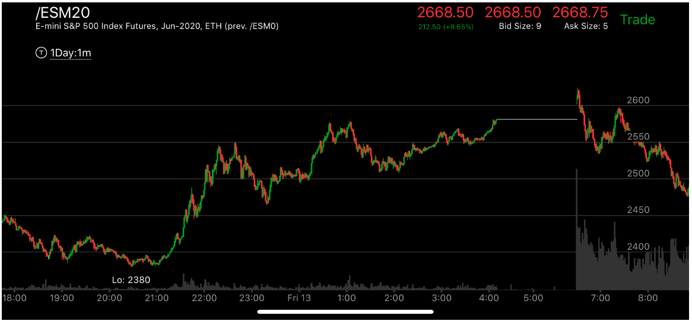

相对弱势在转折点和运动中的集合
- 相对弱势是一个走势的开始的方式。也是一个走势可以持续的方式。
- 要注意小的相对弱势和极点附近的震荡的区别
- 在转折点的地方，它一定要时间超过反方向的最后一浪。它本身要有继续的
形状，比如higher high，或者lower low。然后还有出现没有完成走势。

图示：22：30，它连续走低，但其实幅度不大。它开始上涨，走平，然后再次冲高。
停留时间很短后，拉回，越过走平点。这个就是相对弱势了。它的总的时间也远远长于最后的连续走低。

图示：10：40， 它大涨后，立刻拉回，而且出现了两段下跌。
这个和它前面高点相比，更弱。所以会继续上涨。

图示：8：00走平的时候，出现了新低，然后大幅反弹。和开盘第一浪下跌相比，
它跌幅小，反弹更大。显得下跌更弱。未来会创新低。

图示：10：20创新低后，速度比较慢，然后停留2分钟就大幅拉回。而10：40，
下跌速度很快，创新低，在底部停比前面低点更久。这样就成了相对弱势。大盘反弹。

图示：10：00和10：10的两个低点形成相对弱势。

图示：7：28出现了倾斜向下的走平。产生了新低。然后快速反弹。
和6:50第一浪相比，7：00开始的这个浪幅度小，反弹却很大。这样就是相对弱势。

图示：7：05开始上涨的第一浪。它震荡了40分钟，7：45冲高。要看到它在高点停留时间不长，
就很快大跌下来。8；40再次冲高，这次下跌速度相对比较慢，它创了比前面高点更低的低点。但是它本身也走出一个走势。
所以未来会回到高点。


图示:
图一：Thu7它大幅加速上涨，然而立刻拉回。走平，大部分时间都在低处震荡。所以没有反转。仍然处于升势
图二：开盘后，它冲高，拉回，再次冲高。但是这个走势的第一浪在期货上看，并不存在，所以第二浪才算第一浪
9：00再次冲高，立刻拉回，这次可以看到，它一直在这次冲高的
范围内部运动。然后大跌。9：00的冲高只有一条线，立刻拉回。好像是一个相对弱势。但是由于已经反转了。这个快速冲高拉回不能算弱势。
图三：收盘后，它反弹，填补了3090的真空，然后再次下跌。可以看到，它下跌的第一浪是图二的11：30.21：00虽然低于前面，但是它是缓慢下跌的，所以不能算走势的结束。它再次大幅拉回。
图四：开盘后，它冲高，加速，然后快速下跌，这个和图二形成了两段走势。走势完成，它立刻反弹，其实成为了第一浪。这个也是一个单线反转走势，就是它的开始速度很快。底部没有平缓的形状。
虽然更大的走势仍然是跌势，但是它在内部又反转了成为了升势。这个升势一定要回到3090以上才算结束。

图示：7：15它创新高后，下跌很快，然后再次下来。这个要比6：40的高点更加弱。
这个说明它一旦创新低后，一定会创新高。新低的原因是7：00的两段上涨走势。

图示：12:40和12：10的高点相比，12：40下跌比较慢，但是它不断下跌后，出现了下跌
完成走势。这样它就是一个上涨的相对弱势。